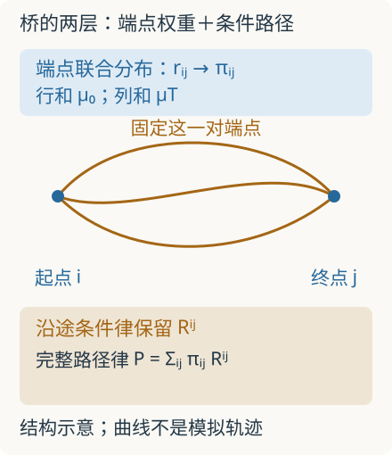

本页目录
数学前沿 I · Schrödinger 桥：在路径空间里校准随机运动
本讲从端点运输推进到整条随机路径的相对熵、条件分解和动力学。先修：Monge–Kantorovich、Wasserstein 几何、计算最优传输；连续时间部分还需条件期望、Itô 积分与 Girsanov 定理。数值练习可以独立完成，连续路径的存在性定理需另读原文。
两张粒子分布照片之间，怎样选择一段随机历史？
1. 为什么端点配对还不够
一群粒子按已知扩散规律运动。实验只在开始和结束拍到密度 \(\mu_0,\mu_T\)，没有逐个追踪粒子。许多运动都符合两张照片；我们希望找到既满足观测、又尽量少偏离已知规律的随机过程。
记 \(\Omega\) 为所有路径组成的空间，\(X_t(\omega)=\omega(t)\) 为取出时刻位置的操作。参考规律 \(R\) 和待求规律 \(P\) 都是 \(\Omega\) 上的概率测度；\(P_t\) 是 \(X_t\) 的分布。Schrödinger 桥求解
若 \(P\) 不对 \(R\) 绝对连续，定义代价为 \(+\infty\)。这意味着参考过程根本不会发生的事件，不能无代价地加入答案。这里优化的是整群路径的概率律；它不同于只选一条“最佳轨迹”。相关定理还要求可行性和有限熵，不能只凭上式宣称任何两张照片都有解。Léonard 的路径空间论述
2. 关键推导：先固定端点，再看中间
先在有限状态、有限时刻且参考路径概率全正的模型中推导。令 \(\pi=P_{0T}\)、\(r=R_{0T}\) 为端点联合分布，\(P^{xy},R^{xy}\) 为给定起终点后的条件路径律。将联合概率拆成“端点概率×条件概率”，对数把乘法变成加法：
第二项非负。固定 \(\pi\) 后，取 \(P^{xy}=R^{xy}\) 即令它为零。因此最优过程只需重配端点权重；在给定同一对端点后，沿途的条件随机规律保留参考桥。
这一步解释了静态运输表与动态过程的联系。端点矩阵只给权重，参考条件桥给中间路径。 只有二者合起来，才确定动态答案。连续情形用条件测度和积分替代求和，须保证解离与熵分解合法。

3. 从乘子得到桥的动力学
对正边缘的有限模型，最小化 \(\sum_{xy}\pi_{xy}\log(\pi_{xy}/r_{xy})\)，加入行列和约束。内部驻点满足
把常数吸收到 \(f,g\)；它们须共同满足两端边缘，不能随便指定。连同上一节可得 \(dP/dR=f(X_0)g(X_T)\)。\(f\) 乘常数而 \(g\) 除以同一常数，不改变 \(P\)。
若参考过程是一阶 Markov 链，转移矩阵记为 \(K_t\)。向后计算
新的转移概率为
分母正时，行和正好为 1。这个 Doob 变换把终点要求传回每一步，而 \(P_0(x)=f(x)R_0(x)g_0(x)\) 负责初始约束。验证行和，是把“路径优化”落实成可执行随机运动的最小检查。可继续在Markov 桥与路径枚举中手算全部八条路径，比较路径 KL 与端点 KL；该实验先选终端势、再导出目标终端边缘，不声称求解任意给定的两端边缘。
4. 连续时间：控制能量为什么等于路径熵
在适当绝对连续性与可积性条件下，参考扩散为 \(dX_t=b_t(X_t)dt+\sqrt\varepsilon\,dW_t\)。候选过程增加漂移 \(u_t\)，并固定相同初始分布。Girsanov 换测度给
所以“少改参考随机律”对应“少花额外控制能量”。若初始分布不同，还必须加 \(H(P_0\mid R_0)\)；若改变扩散系数，不能直接沿用这个漂移公式。
光滑正函数 \(g_t(x)=\mathbb E_R[g(X_T)\mid X_t=x]\) 满足向后 Kolmogorov 方程。对生成元 \(L=b\cdot\nabla+(\varepsilon/2)\Delta\) 使用乘积法则，新增一阶项是 \(\varepsilon\nabla\log g_t\cdot\nabla\)，因此桥漂移为
它把熵、控制和 score 型梯度连接起来。小噪声趋向最优传输需要额外紧性与极限条件；不能把某一次低噪声模拟当作收敛证明。小噪声极限定理
还要区分两种误差：固定 \(\varepsilon>0\) 时，算法是否准确逼近这个随机桥；改变 \(\varepsilon\) 时，桥本身怎样接近另一个极限问题。减小噪声不会自动降低网络估计误差，也可能使条件采样更困难。数值验收至少应检查两端边缘是否同时匹配、漂移能量是否有限，以及换时间步长后结果是否稳定，而不能只展示一张看似正确的终点散点图。
5. 可算的端点练习
先预测：两端都各有一半质量，留在原位置成本为零、跨位置成本为 1。熵权重 \(\varepsilon\) 越大，交叉质量会增大还是减小？
完整静态后备：本实验只算 \(2\times2\) 端点熵正则化，不模拟连续路径。成本 \(C=\begin{pmatrix}0&1\\1&0\end{pmatrix}\)，边缘均为 \((1/2,1/2)\)；最小化 \(\langle C,\pi\rangle+\varepsilon\sum\pi_{ij}\log\pi_{ij}\)。所有可行矩阵写成 \(\pi=\begin{pmatrix}p&q\\q&p\end{pmatrix}\)、\(q=1/2-p\)。
目标导数为 \(-2+2\varepsilon\log(p/q)\)，从而
| \(\varepsilon\) | 每个对角格 \(p\) | 每个交叉格 \(q\) | 总交叉质量 \(2q\) |
|---|---|---|---|
| 0.25 | 0.491007 | 0.008993 | 0.017986 |
| 1（默认） | 0.365529 | 0.134471 | 0.268941 |
| 4 | 0.281088 | 0.218912 | 0.437823 |
实验界面采用到均匀四格耦合的 \(\mathrm{KL}(\pi\mid1/4)=\sum\pi_{ij}\log\pi_{ij}+\log4\)；乘以 \(\varepsilon\) 后只比上述目标多常数 \(\varepsilon\log4\)，极小解相同。Sinkhorn 缩放使用核 \(K_{ij}=e^{-C_{ij}/\varepsilon}\)；在这个对称例中一次共同归一化就满足边缘。参数趋零时趋于对角运输，趋无穷时四格趋于 \(1/4\)。矩阵和行列和可以手算复核；它检验端点优化机制，尚不检验神经网络的路径近似精度。
6. 两道迁移题
题 1。 参考链绝不换位置，即 \(K=I\)。若初始边缘为 \((1/2,1/2)\)，目标为 \((1/4,3/4)\)，能否找到有限路径 KL 的桥？
独立作答后核对题 1
不能。有限 KL 要求 \(P\ll R\)，所以候选过程也不能换位置，终点边缘只能等于初始边缘。这是支持不可达导致的不可行；增加 Sinkhorn 迭代次数不会产生原本不存在的参考路径。
题 2。 若研究者还要求粒子中途避开高风险区域，单靠端点 \(\mu_0,\mu_T\) 能表达这个要求吗？怎样修改目标？
独立作答后核对题 2
端点相同的路径可能经历不同风险。可增加 \(\mathbb E_P\int_0^TV_t(X_t)dt\)。若 \(Z=\mathbb E_R[e^{-\int Vdt}]\) 有限且正，定义 \(dR^V=Z^{-1}e^{-\int Vdt}dR\)，则 \(H(P\mid R^V)=H(P\mid R)+\mathbb E_P\int Vdt+\log Z\)。优化因而转向带路径势能的参考律。它改变条件桥，不能只改端点表而忽略沿途代价。
7. 正在向哪里推进
2023 年的 DSBM 把桥匹配与迭代 Markov 拟合结合，研究如何在高维近似路径律。2026 年的 Twisted Schrödinger Bridge Matching 预印本进一步加入 Feynman–Kac 势能。严格的连续问题、理想迭代收敛、有限网络训练和实际样本质量是不同层次，后者仍需独立误差检验。
以下为实际核对的原始研究与作者论述；访问日期均为 2026-09-08，是选定阅读入口，不是最新文献的穷尽清单。
- Léonard，路径空间 Schrödinger 问题综述：首发 2013-08-01，期刊版 2014；包含严格条件、熵分解与 \((f,g)\) 变换。
- Léonard，From the Schrödinger problem to the Monge–Kantorovich problem：首发 2010-11-11，JFA 2012；证明带假设的小噪声极限。
- Shi、De Bortoli、Campbell、Doucet，Diffusion Schrödinger Bridge Matching：首发 2023-03-29；迭代 Markov 拟合与计算方法研究。
- Noble 等，Twisted Schrödinger Bridge Matching：首发 2026-07-18，所查页面标为预印本；推广到带势能的桥，并报告数值实验，不能据此宣布所有训练情境均有保证。
速查：路径桥的三个层次
| 层次 | 本讲的结论 | 必须保留的条件 |
|---|---|---|
| 路径熵 | \(H(P\mid R)=H(\pi\mid r)+\mathbb E_\pi H(P^{xy}\mid R^{xy})\) | 条件分解存在，熵合法 |
| 有限 Markov 桥 | \(K_t^*(x,y)=K_t(x,y)g_{t+1}(y)/g_t(x)\) | 分母正、端点约束共同满足 |
| 漂移控制 | \(H(P\mid R)=\mathbb E_P\int\|u\|^2dt/(2\varepsilon)\) | 同初始律、同扩散项及换测度条件 |
静态端点实验验证质量分配；连续时间桥还要指定参考条件路径。近期研究把这套结构推广到学习的动力学与带势能的路径约束。
连续训练：路径熵与随机场极限把有限模型、误差控制和退出题接成可交卷的路线。
继续连续时间路径熵与控制，用完整高斯模型对照终端倾斜、Doob漂移、条件桥与路径能量。